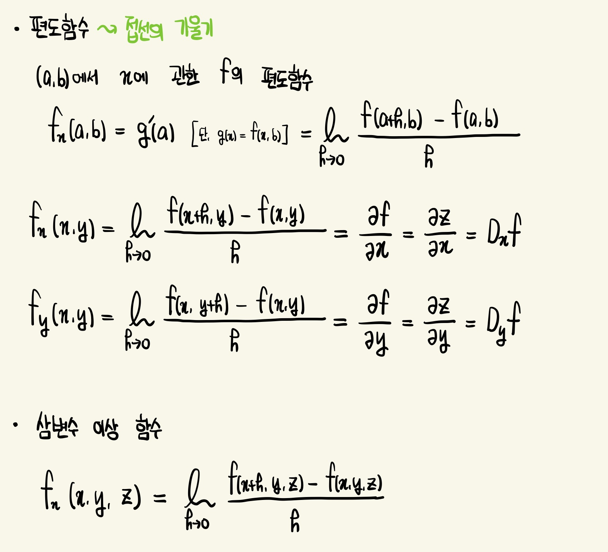
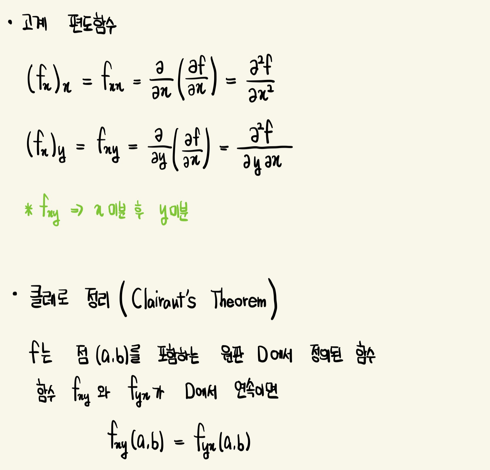

편도함수 (Partial Derivative)
∂f/ ∂x는 미분의 비로 해석해서는 안됨 (변화율의 의미는 가지지만 분모나 분자를 분리하는 연산은 불가능)
* z= f(x,y)의 편도함수를 구하기 위한 규칙
- f_x를 구하기 위해서 y를 상수로 보고 f(x,y)를 x에 관해 미분
- f_y를 구하기 위해서 x를 상수로 보고 f(x,y)를 y에 관해 미분
편미분계수 f_x(a,b)와 f_y(a,b)는 기하학적으로 y=b와 x=a의 평면에서 S의 자취 C1과 C2에 대한 점 P(a,b,c)에서 접선의 기울기로 해석 가능
 